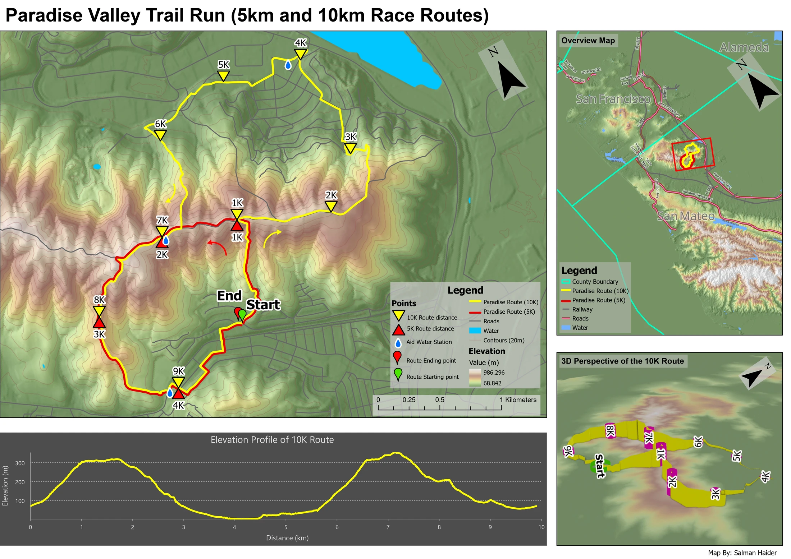

Cartography
Paradise Valley trail map
For this fictional trail running event near San Francisco, I wanted a runner to see where the two courses go, where they share a trail and what the terrain would be like. The route line alone could not explain the effort involved, so I added contours, shaded terrain and a profile of the longer course.
- Format
- Trail map design concept
- Routes
- Approximate 5 km and 10 km routes
- Contour interval
- 20 metres
- Tools
- ArcGIS Pro, Terrain analysis, 3D Analyst
Routes and terrain


Read the two route colours on the main map, then follow the 10 km course through its two major climbs in the profile below. The event is fictional and route lengths and markers are approximate.
Inspect details: Routes and terrainBuilding the terrain background
I generated contours, hillshade and curvature from the elevation model. After testing different contour intervals, I chose 20 metres: smaller intervals crowded the route, while larger ones removed too much detail. Curvature helped bring out ridges and changes in the land surface.
I then placed the red and yellow courses over that background, with different distance markers, direction arrows, water stops and start and finish symbols. The colours keep the shorter and longer routes distinguishable where they overlap.
What a runner can read from the layout
The main map shows where the routes split and rejoin; the profile shows the sequence of climbs and descents along the 10 km course. Together they could help someone studying the route anticipate the harder sections and locate the marked water stops.
The 3D view makes the hills more tangible, but I found that it repeated some of the profile's information. I would prioritise the main map and profile in a smaller handout. This remains a design concept with approximate routes and markers, rather than a verified course for navigation.
Data and references
- The National Map, base data and digital elevation model
- Penn State, supplied fictional Paradise Valley route dataset